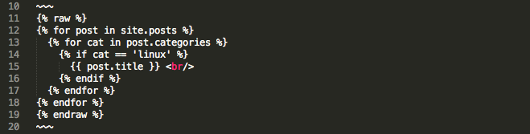

Howto Highlight Liquid Code in Jekyll
You cannot highlight Liquid snippet in Jekyll by simply enclosing the snippet with pre tag or the { % highlight% } { % endhighlight% } pair. Jekyll will interpret the snippet instead of displaying it.
To display Liquid snippet in Jekyll, you can enclose it between { % raw % } and { % endraw % }
